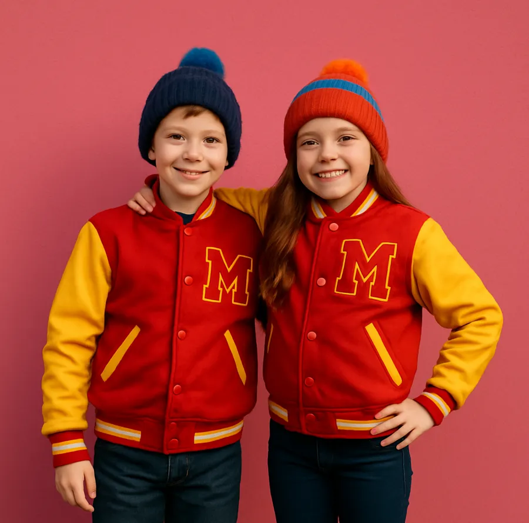
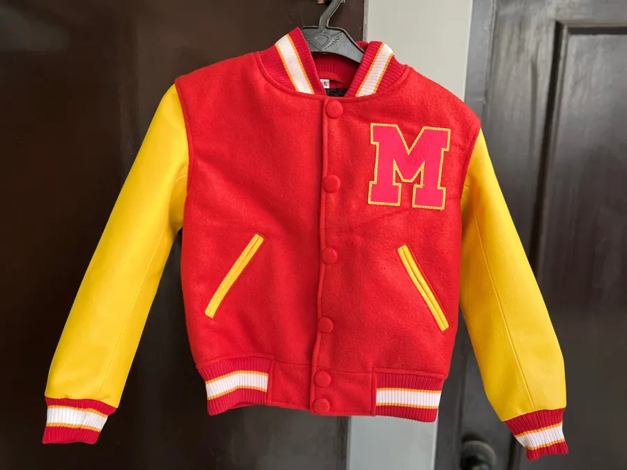
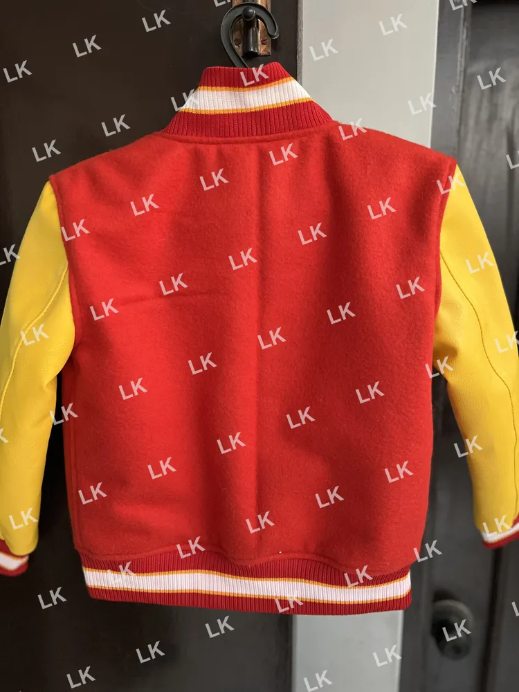

Kids love dressing up as Michael Jackson. This parent-friendly guide covers the Thriller look, choosing a comfortable jacket for toddlers and children, and party and dance ideas.

Few music videos have the staying power of Thriller. Four decades on, children who were born long after it was released still know the dance, the zombies and that red jacket. Every Halloween, school costume day and birthday party, little moonwalkers appear in red and black, ready to perform for anyone who will watch.
If your child wants to dress as Michael Jackson, the good news is that it is one of the easiest costumes to put together, and one of the most fun. This guide is written for parents and covers what to buy, how to keep a little one comfortable, and a few ideas to make the day memorable.
The original Thriller outfit is a red jacket with bold black detailing, red trousers and a white T-shirt or shirt, finished with white socks and black loafers. It is graphic and bright, which is exactly why children love it and why it photographs so well.
For younger kids, a softer varsity bomber version of the look is often more practical than a stiff replica. A wool childrens michael jackson thriller jacket in red with black accents gives the instant MJ effect while staying warm and comfortable for a busy day. When choosing one, look for:
Once you have the jacket, the rest is simple:
Avoid anything restrictive. Children will want to dance, and the costume should let them.
Young children have short patience for itchy clothes. A few tips:

Half the fun is the dance. Find a short clip of the Thriller choreography and practise a few simple moves with your child: the zombie arms, the shoulder shuffle and the side step. Even toddlers can manage the zombie walk. A simple moonwalk attempt on a smooth floor is always a crowd-pleaser at parties, and it is a great way to burn off sugar after trick-or-treating.
Many parents searching for a children's thriller jacket for a single Halloween find that their child wants to wear it all winter, which makes a quality jacket a sensible buy.
Check the size chart carefully and measure your child's chest and arm length. If they are between sizes, go up, as children grow quickly and the jacket can be worn longer. For care, spot clean small marks with a damp cloth, avoid putting a wool jacket in a hot dryer, and hang it up after use so it keeps its shape.

A Michael Jackson costume gives children a chance to sing, dance and show off, and it introduces a new generation to one of pop's greatest performers. With a comfortable red jacket, white socks and a little practice, your child will be the star of any party. Just be prepared to watch the moonwalk many, many times.